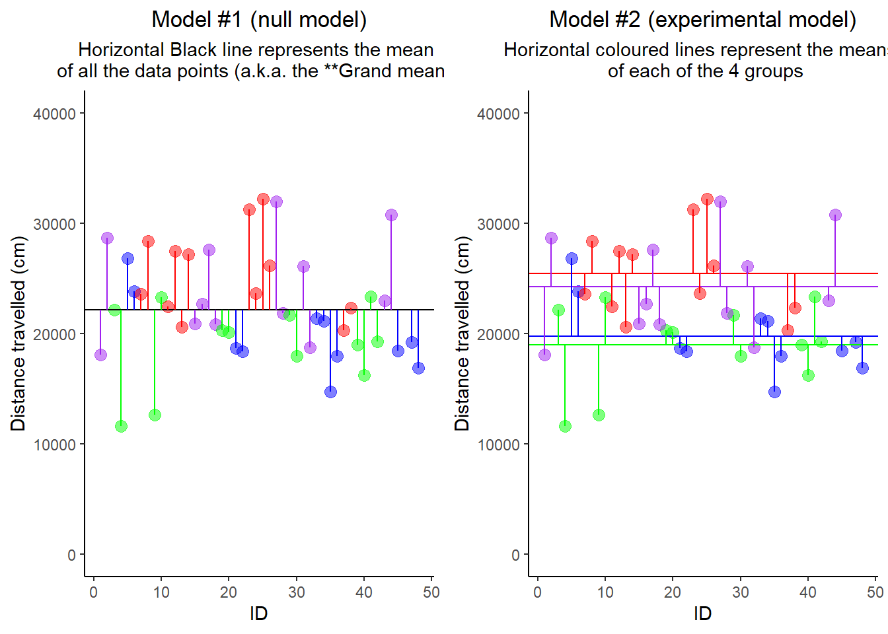
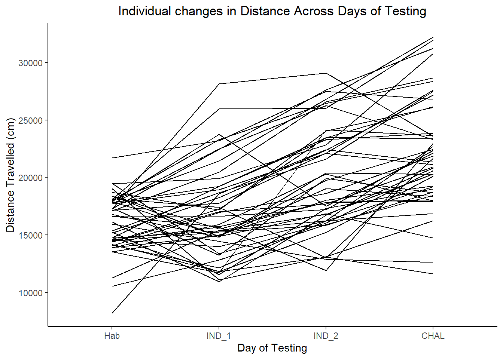

The General Linear Model
The GLM is a family of analytic approaches that involves fitting lines to data points.
The underlying formula for the GLM:
$$ \dfrac{signal}{noise} $$
OR, in other words,
$$ \dfrac{systematic\ variance}{error\ variance} $$
ANOVA (Analysis of Variance)
Like t-tests, ANOVA requires categorical IV(s) and a continuous DV
- ANOVA can handle any number of groups and any number of factors.
- This is the main advantage of ANOVA over t-tests, which can only handle 2 groups and a single factor
Dimensions of the ANOVA:
The number of factors:
- “One-Way ANOVA” = 1 factor
- “Two-way ANOVA” = 2 factors
The experimental design:
- repeated measures = Multiple measurements involving the same individuals.
- independent samples = Comparisons involving multiple groups of individuals.
One-Way ANOVA (Independent Samples)
- Here, we are comparing whether the 4 individual group means is a better fit for the data than the Grand Mean
- Vertical coloured lines represent the residuals
- To begin calculating ANOVA, each residual is squared (^2)
- The sum of squares = the sum of all the squared residuals (All added together)
Mean Square is calculated separately for each model:
$$ Mean\ Square = \dfrac {Sum\ of\ Squares}{df} $$
The ratio between the two models is computed as the final F value:
$$ F = \dfrac{Mean\ Square\ Between}{Mean\ Square\ Within} $$
Prepare data
- Prepare a column named “group” that codes the four experimental conditions.
# create a single variable - "group" - to represent hormone treatments
data <- data %>%
mutate(group = case_when(
data$PREhorm == "OIL" & data$CHALhorm == "OIL" ~ "OIL / OIL",
data$PREhorm == "EB" & data$CHALhorm == "OIL" ~ "EB / OIL",
data$PREhorm == "OIL" & data$CHALhorm == "EB" ~ "OIL / EB",
data$PREhorm == "EB" & data$CHALhorm == "EB" ~ "EB / EB"
))
# Reorder the "group" variable
data$group <- as.character(data$group)
data$group <- factor(data$group, levels=c("OIL / OIL", "EB / OIL", "OIL / EB", "EB / EB"))
Compute one-way ANOVA
oneway.test(CHAL ~ group, data=data, var.equal = TRUE)
##
## One-way analysis of means
##
## data: CHAL and group
## F = 7.7801, num df = 3, denom df = 43, p-value = 0.0002934
Compute Tukey Follow-up comparisons of pairwise between-group comparisons.
a <- aov(CHAL ~ group, data=data)
TukeyHSD(a, conf.level = .95)
## Tukey multiple comparisons of means
## 95% family-wise confidence level
##
## Fit: aov(formula = CHAL ~ group, data = data)
##
## $group
## diff lwr upr p adj
## EB / OIL-OIL / OIL 5700.5985 1260.08316 10141.114 0.0070700
## OIL / EB-OIL / OIL -799.5682 -5240.08351 3640.947 0.9628549
## EB / EB-OIL / OIL 4499.6818 59.16649 8940.197 0.0459711
## OIL / EB-EB / OIL -6500.1667 -10843.07633 -2157.257 0.0013542
## EB / EB-EB / OIL -1200.9167 -5543.82633 3141.993 0.8808000
## EB / EB-OIL / EB 5299.2500 956.34033 9642.160 0.0112658
-
The above example is not “the best” application of the OneWay ANOVA, or the best analysis for the data - The above approach would be appropriate if the 4 conditions were unrelated.
-
Here, the experiemnt is really a 2x2 design (PREhorm*CHALhorm), so it would be more appropriate to analyze using a Two-way ANOVA instead.
Two-Way ANOVA on EB Rats Data (Indpendent Samples)
a <- aov(CHAL ~ PREhorm * CHALhorm, data=data)
summary(a)
## Df Sum Sq Mean Sq F value Pr(>F)
## PREhorm 1 357515922 357515922 22.563 0.0000229 ***
## CHALhorm 1 11849781 11849781 0.748 0.392
## PREhorm:CHALhorm 1 472503 472503 0.030 0.864
## Residuals 43 681351402 15845381
## ---
## Signif. codes: 0 '***' 0.001 '**' 0.01 '*' 0.05 '.' 0.1 ' ' 1
Written Result:
Rats treated with EB during the induction phase of sensitization travelled longer distances on the challenge day than rats treated with OIL vehicle during induction (F(1,43) = 22.40, p < 0.001).
The effect of EB treatment on the challenge day and the interaction between induction and challenge hormone were non-significant (p = 0.39, p = 0.86, respectively).
One-Way Repeated Measures ANOVA
Could be used to answer the question do the rats exhibit overall increases in distance travelled across the multi-injection paradigm?
- The question could also be framed as deos the nicotine paradigm produces locomotor sensitization?
The same data are plotted to showcase individual changes in distance travelled across the four days of testing.
Prepare Data
library(reshape2)
long_data <- data %>%
select(c("ID","Hab","IND_1","IND_2","CHAL")) %>%
melt(id.vars = "ID")
head(long_data)
## ID variable value
## 1 1 Hab 16625
## 2 2 Hab 17097
## 3 3 Hab 17909
## 4 4 Hab 14199
## 5 5 Hab 21715
## 6 6 Hab 14733
Compute ANOVA
library(rstatix)
a <- anova_test(data=long_data, dv=value, wid=ID, within = variable)
get_anova_table(a)
## ANOVA Table (type III tests)
##
## Effect DFn DFd F p p<.05 ges
## 1 variable 2.47 113.51 48.421 0.00000000000000000458 * 0.266
Compute Follow-up comparisons
long_data %>%
pairwise_t_test(
value ~ variable, paired = TRUE,
p.adjust.method = "bonferroni"
)
## # A tibble: 6 × 10
## .y. group1 group2 n1 n2 statistic df p p.adj p.adj.signif
## * <chr> <chr> <chr> <int> <int> <dbl> <dbl> <dbl> <dbl> <chr>
## 1 value Hab IND_1 47 47 -1.57 46 1.24e- 1 7.44e- 1 ns
## 2 value Hab IND_2 47 47 -5.82 46 5.37e- 7 3.22e- 6 ****
## 3 value Hab CHAL 47 47 -8.91 46 1.39e-11 8.34e-11 ****
## 4 value IND_1 IND_2 47 47 -6.58 46 3.94e- 8 2.36e- 7 ****
## 5 value IND_1 CHAL 47 47 -9.92 46 5.31e-13 3.19e-12 ****
## 6 value IND_2 CHAL 47 47 -4.72 46 2.22e- 5 1.33e- 4 ***
Written Result:
Rats treated with EB during the induction phase travelled longer distances on the challenge day than did rats treated with OIL vehicle during induction (F(1,45) = 23.19, p < 0.001)
Rats treated with EB during the induction phase exhibited an increase in distance travelled between the second induction day and the challange day (p < 0.001) whereas rats treated with OIL vehicle during induction did not (p = 0.24)
Two-Way Repeated Measures ANOVA
Prep Data
- Output: A “long-form” version of the dataframe.
library(reshape2) # Required for the melt function
long_data_2 <- data %>% # Take the long dataframe AND TEHN
select(c("ID","PREhorm","Hab","IND_1","IND_2","CHAL")) %>%
melt(id.vars = c("ID","PREhorm")) # Switch to ggplot format
head(long_data) # Check out the result
## ID variable value
## 1 1 Hab 16625
## 2 2 Hab 17097
## 3 3 Hab 17909
## 4 4 Hab 14199
## 5 5 Hab 21715
## 6 6 Hab 14733
Compute ANOVA
a <- anova_test(data=long_data_2, dv=value, wid=ID, within = variable, between = PREhorm)
# Make a pretty table:
knitr::kable(get_anova_table(a))
| Effect | DFn | DFd | F | p | p<.05 | ges |
|---|---|---|---|---|---|---|
| PREhorm | 1.00 | 45.00 | 8.395 | 0.006000 | * | 0.109 |
| variable | 2.49 | 112.23 | 55.547 | 0.000000 | * | 0.298 |
| PREhorm:variable | 2.49 | 112.23 | 8.630 | 0.000103 | * | 0.062 |
Compute Follow-up comparisons version 1 of 2:
- This style of follow up allows you to assess individual changes between days within individuals of different groups.
a <- long_data_2 %>%
group_by(PREhorm)%>%
pairwise_t_test(
value ~ variable, paired = TRUE,
p.adjust.method = "bonferroni"
)
# Make a pretty table:
library(kableExtra)
knitr::kable(a)
| PREhorm | .y. | group1 | group2 | n1 | n2 | statistic | df | p | p.adj | p.adj.signif |
|---|---|---|---|---|---|---|---|---|---|---|
| OIL | value | Hab | IND_1 | 23 | 23 | 0.0074401 | 22 | 0.9940000 | 1.0000000 | ns |
| OIL | value | Hab | IND_2 | 23 | 23 | -2.6695000 | 22 | 0.0140000 | 0.0840000 | ns |
| OIL | value | Hab | CHAL | 23 | 23 | -3.8584200 | 22 | 0.0008510 | 0.0050000 | ** |
| OIL | value | IND_1 | IND_2 | 23 | 23 | -4.1184209 | 22 | 0.0004520 | 0.0030000 | ** |
| OIL | value | IND_1 | CHAL | 23 | 23 | -5.8470014 | 22 | 0.0000070 | 0.0000418 | **** |
| OIL | value | IND_2 | CHAL | 23 | 23 | -1.2941827 | 22 | 0.2090000 | 1.0000000 | ns |
| EB | value | Hab | IND_1 | 24 | 24 | -2.3646686 | 23 | 0.0270000 | 0.1610000 | ns |
| EB | value | Hab | IND_2 | 24 | 24 | -6.0380086 | 23 | 0.0000037 | 0.0000222 | **** |
| EB | value | Hab | CHAL | 24 | 24 | -11.9300494 | 23 | 0.0000000 | 0.0000000 | **** |
| EB | value | IND_1 | IND_2 | 24 | 24 | -5.1122968 | 23 | 0.0000353 | 0.0002120 | *** |
| EB | value | IND_1 | CHAL | 24 | 24 | -9.7292281 | 23 | 0.0000000 | 0.0000000 | **** |
| EB | value | IND_2 | CHAL | 24 | 24 | -5.8054227 | 23 | 0.0000065 | 0.0000389 | **** |
Compute Follow-up comparisons version 2 of 2:
- This style of follow up allows you to assess between-group differences on each day of testing.
a <- long_data_2 %>%
group_by(variable)%>%
pairwise_t_test(
value ~ PREhorm, paired = FALSE,
p.adjust.method = "bonferroni"
)
# Make a pretty table:
knitr::kable(a)
| variable | .y. | group1 | group2 | n1 | n2 | p | p.signif | p.adj | p.adj.signif |
|---|---|---|---|---|---|---|---|---|---|
| Hab | value | OIL | EB | 23 | 24 | 0.7340000 | ns | 0.7340000 | ns |
| IND_1 | value | OIL | EB | 23 | 24 | 0.0879000 | ns | 0.0879000 | ns |
| IND_2 | value | OIL | EB | 23 | 24 | 0.0536000 | ns | 0.0536000 | ns |
| CHAL | value | OIL | EB | 23 | 24 | 0.0000169 | **** | 0.0000169 | **** |